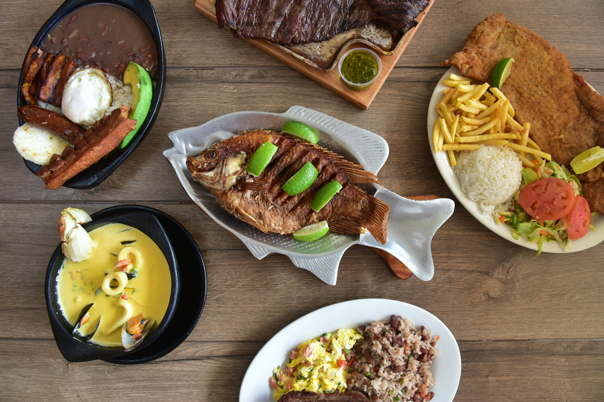

Fried Fish

Description
Enjoy the taste of Lake Victoria Fresh fried fish
My favorite Tilapia and mudfish, swallow huge lump of saliva at the sight
Ingredients
The following ingredients brings it at the taste:
- 2 pieces of Tilapia or mudfish cleaned and scales removed completely
- 2 teaspoons salt
- 1 cup of cooking oil
- 3 tomatoes
- 2 onions
- 1 pepper
Steps
- Rub salt all over the fish including the inside
- Heat oil in a wide frying pan
- When the oil is hot, put in the fish. Cover the frying pan leaving a small opening to allow steam out.
- Fry each side in medium heat for about 5 to 10 minutes. Wait until no sound is heard. At this point the liquid in the fish is gone and the fish is crips
- Remove from the pan and arrange in a serving plate.
- Cut the onions, tomatoes and pepper in a plate and mix homogeniousely
- Add to it some salt and pour it besides the fried fish
- Share with the favorite condiments and side dish